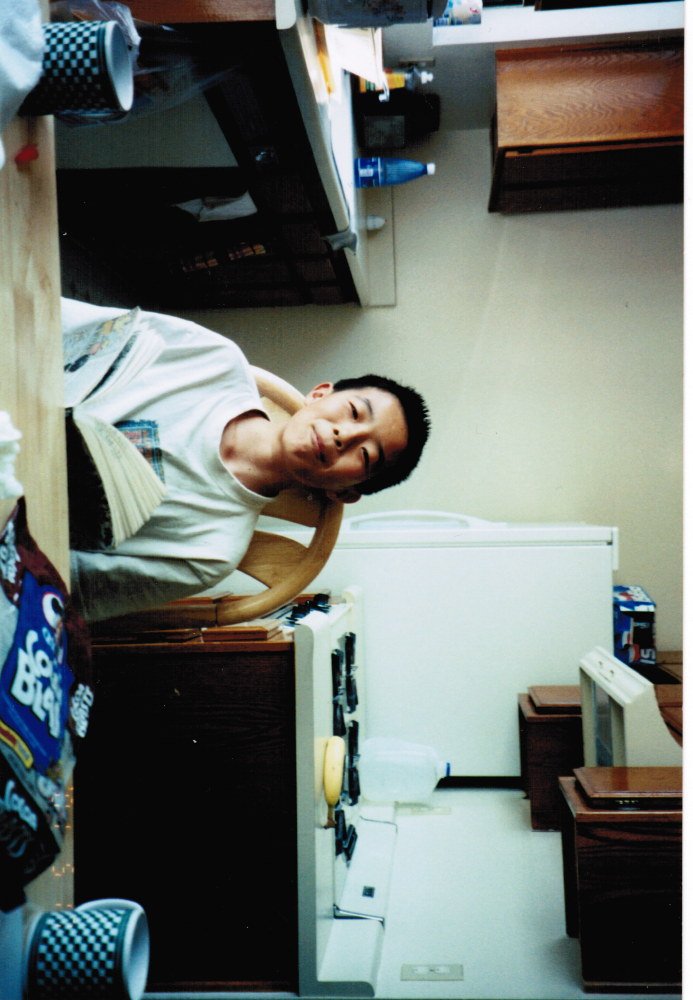
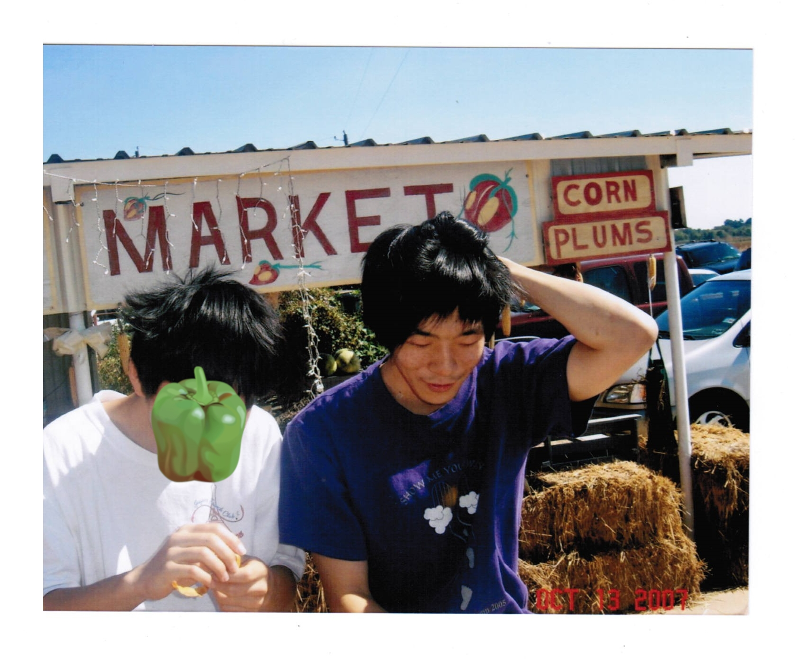
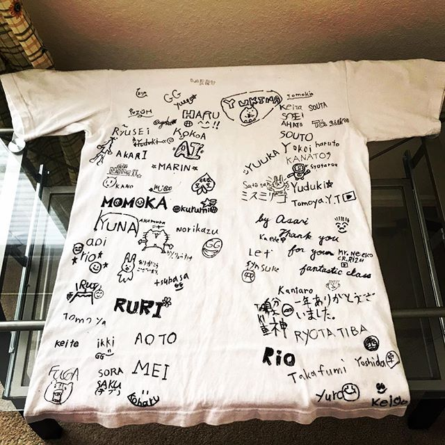
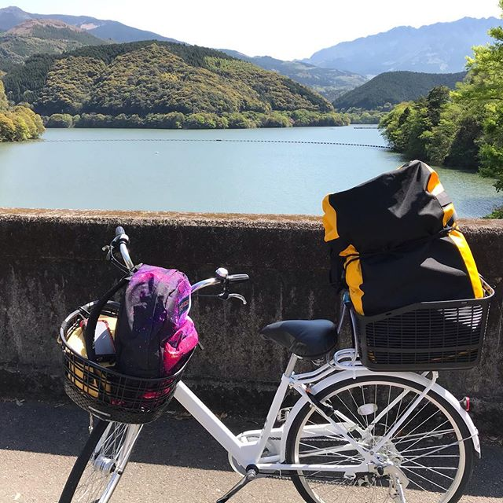
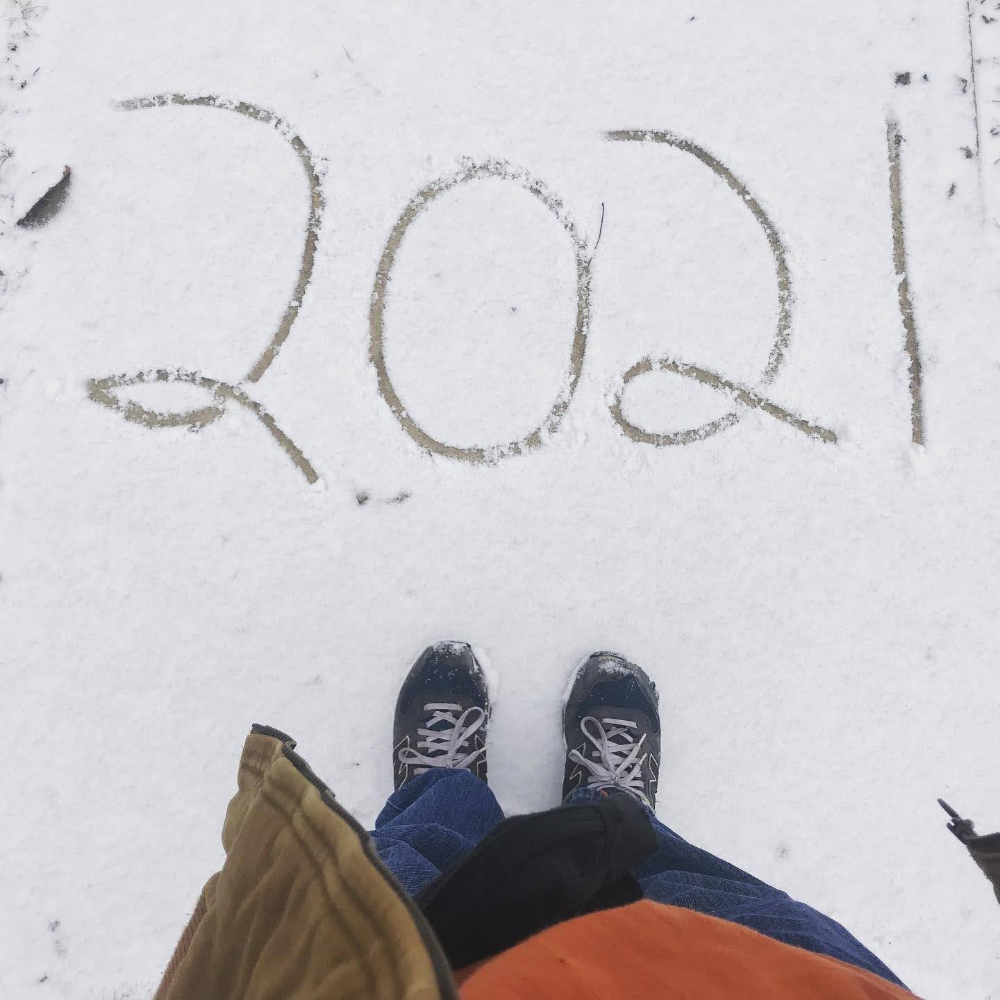
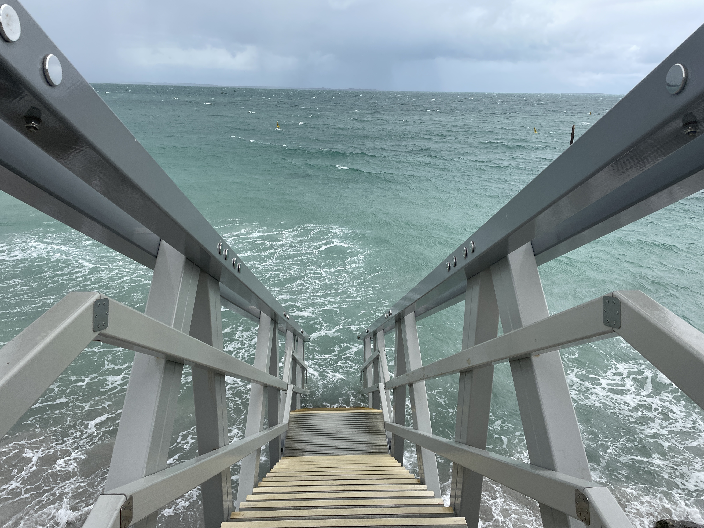
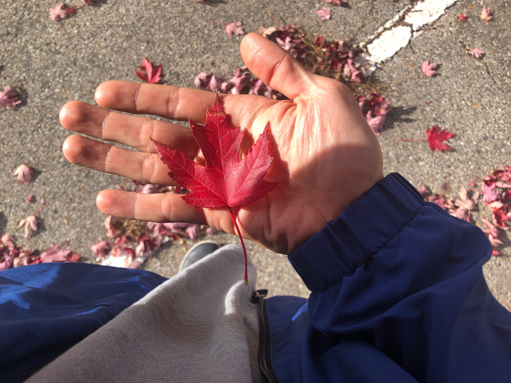

I was born in Shenyang, a city in northeast China kinda close to Korea. I lived there until I was 6, when my family moved to the United States. We stayed in Los Angeles for a year+, then moved to Canada for visa reasons. I spent most of my childhood there, from 2nd grade to the beginning of middle school. We moved back to California, where I finished middle school. Here I am trying to be street smart (I wasn't).

We lived briefly in Kansas then moved to Dallas, where I would end up finishing high school and college. I succeeded academically, but didn't have a plan for what I wanted to do. In my second year of college, I wanted to drop out, but ended up sticking it out for a bachelor's degree. I was always shy, but from middle school onwards it got to the point of being abnormal. Here is me with one of my rare friends.

I spent most of my 20s wandering between various part time and temporary jobs, and moving in and out of my parents' house. Instead of becoming an 'adult' and integrating into society I turned toward the world of my inner mind. I could call it the lost decade, or maybe the calm before the storm, but it wasn't wasted time. It was necessary for my internal development, though it did make me late: late to career, late to marriage.
In 2018 I moved to Japan and taught English there for a year. Being an ALT (assistant language teacher) and interacting with the kids I begun to break out of my shell. It was a fun year, and it changed my life. After the school year ended I undertook a unique journey: to bike across Japan on a mama-chari (a regular commuter bicycle) from south (Kyushu) to north (Hokkaido). I blogged during this time and you can find it in my about page.

I had some students sign a shirt. The second picture is a scene from my bike trip, which lasted a month.

The bike adventure made me serious about career and steeled my resolve to be a man, whatever that meant. At the beginning of 2020 I moved to Ohio and attended a coding bootcamp. I felt there was really nothing I couldn't do after biking across Japan. I became good at coding and worked in IT for the next 5 years. But the story would not be that simple.

At my second job I began to become disillusioned about work in the corporate world and was hit from two sides with mid-life crisis and crippling anxiety. I switched jobs, then eventually took a break altogether, traveling to Australia on a working holiday visa. There I worked on a sheep farm and did a construction job. It was my dream to live in Australia too. But I returned after half a year sensing unfinished business. Pictured: to the ocean and beyond, in Perth.

Despite applying to hundreds of jobs (maybe 600+) it took more than a year to find a software position, during which I flirted with ironworking. Even after landing a job I still felt lost. Finally in 2025 I left IT and went full in on ironworking, not just as a career, but a way to immerse into the real world and discover what it means to be a man. If to conquer oneself is to conquer the world, then I must say the world is supremely difficult to conquer. I am slowly overcoming the ghosts of past and present, though there is one link I have yet to encounter...
